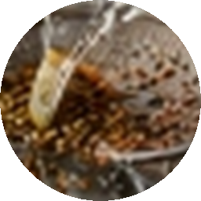

PURITY YOU CAN TRUST.
QUALITY YOU CAN TASTE.
At SYD Spices, quality is never an afterthought or a marketing catchphrase—it is our founding principle. Direct APMC India procurement, cryogenic slow stone-pulverization strictly under 40°C, absolute zero fillers, and batch-level NABL lab testing guarantee that every pinch is 100% pure, natural, and biologically potent.
The Three Pillars Behind Our Purity
How we protect the true medicinal value, natural oils, and authentic flavour of real Indian spices where commercial mass producers take shortcuts.
Single-Origin India Mandi Sourcing
Our operations are rooted in Gala No. 12, Spice Park, India—the epicenter of Asia's spice trade. We procure fresh seasonal crops directly from verified farmers and APMC auctions, eliminating multi-layered middlemen and commingled stale lots.
- ✓ Direct APMC mandi auction bidding
- ✓ Only Grade-A plump bold seed selection
- ✓ Fresh seasonal single-origin harvest
Low-Temperature Cold-Pulverization
High-speed commercial hammer mills generate friction heat exceeding 80°C, scorching delicate volatile aromatic oils. Our specialized water-cooled and traditional slow-milling equipment never exceeds 40°C, locking in natural thymol, capsaicin, and curcumin.
- ✓ Temperature maintained strictly under 40°C
- ✓ Retains >3.5% volatile essential oils
- ✓ Prevents aroma burnout and oxidation
Absolute Adulteration Immunity
We never use cheap fillers, seed husk extenders, wheat starch, sawdust, or synthetic dyes. What you see on our label is exactly what is inside the pack. Every single gram is pure, genuine whole spice ground to perfection.
- ✓ 100% natural pure agricultural spice
- ✓ Zero artificial food coloring or Sudan dyes
- ✓ Zero MSG, anti-caking agents, or preservatives
Why Milling Temperature Changes Everything
The hidden reason why grocery store spices smell flat and require half a container to season a dish—compared to a single fragrant pinch of SYD.
High-Speed Industrial Hammer Mills
Mass factories prioritize speed over flavor. Steel beaters spin at 3,000+ RPM, creating scorching friction temperatures that flash-evaporate volatile compounds into the factory exhaust.
- ✕ 60%+ Volatile Oil Loss: Fragrant terpenes boil away during grinding.
- ✕ Scorched Bitter Flavor: Heat caramelizes and burns delicate spice sugars.
- ✕ Compensatory Chemicals: Often spiked with synthetic colorants and perfumes.
Sub-40°C Slow Cryogenic Pulverization
We slow our milling down and utilize jacketed water-cooled chambers. Spices are gently pulverized at low thermal thresholds, trapping 100% of the active oils inside the microscopic particles.
- ✓ 100% Essential Oils Preserved: High retention of thymol, capsaicin, and curcumin.
- ✓ Sweet, Pristine Bouquet: Natural volatile aromas burst alive the moment they hit hot ghee.
- ✓ Intense Culinary Potency: A single teaspoon delivers the flavor impact of three commercial spoons.
Commercial Spices vs. The SYD Pure Standard
Understand why a small pinch of SYD Spice produces more vibrant color, intoxicating aroma, and deeper flavour than multiple spoons of conventional grocery brands.
| Quality Parameter | Conventional Commercial Spices | 🌿 SYD Pure Spices Standard |
|---|---|---|
| Volatile Essential Oils Aroma, medicinal value & flavor depth | ✕ Often depleted (<1.2%) due to high-friction factory heating during high-speed milling. | ✓ High concentration (>3.5%) preserved intact through slow cryogenic cold-grinding below 40°C. |
| Raw Material Selection Grain size, density & botanical grade | ✕ Mixed byproduct lots, broken shriveled seeds, and residual husk sweepings. | ✓ 100% Bold Grade-A whole grains sourced directly from APMC India farmer auctions. |
| Color & Pigmentation Visual hue in gravies and curries | ✕ Often spiked with chemical colorants or synthetic dyes to conceal dull, aged raw materials. | ✓ 100% natural, deep sun-ripened hue derived purely from high-capsaicin chillies and Salem turmeric roots. |
| Extenders & Starch Fillers Volume padding & bulking agents | ✕ Up to 15%–25% cheap coriander husks, roasted grain flour, or industrial starch bulking. | ✓ Absolute 0% fillers. Every single particle in the pouch is authentic, unadulterated spice. |
| Milling Temperature Heat exposure during processing | ✕ 75°C–90°C high-speed hammer milling causing scorched, bitter aftertastes. | ✓ Water-cooled slow stone mills strictly controlled under 40°C for pristine sweet fragrant notes. |
| Packaging Freshness Lock Moisture, UV & oxygen protection | ✕ Permeable single-layer plastic bags susceptible to oxidation and rapid flavor loss. | ✓ Multi-layered, nitrogen-flushed airtight barrier pouch sealing out air, moisture, and light. |
| Batch Lab Verification Chemical assay & heavy metal audit | ✕ Infrequent random spot-checks; zero public batch verification access. | ✓ 100% batch-level NABL certification with transparent digital COA lookup for every pouch. |
The 6-Stage Purity Journey
Follow the meticulous journey of every SYD spice grain through optical grading, stone milling, and laboratory certification.

Single-Origin Mandi Sourcing
Bidding on premium agricultural lots at India APMC market. We select only heavy, high-oil seeds harvested during the peak season from Gujarat and Rajasthan soils.

Dual Optical & Manual Grading
Advanced optical color sorters coupled with seasoned spice masters inspect every batch. Immature grains, discoloration, and uneven pods are rigorously filtered out.

Multi-Stage Magnetic Destoning
High-power magnetic separators, vibratory destoners, and multi-deck air-aspirators eliminate agricultural dust, clay, and field debris to reach 99.5% machine purity.

Sub-40°C Slow Cold-Milling
Whole spices are ground slowly using traditional granite stone and chilled-chamber mills. Preventing thermal spikes ensures that the volatile aromatic oils remain trapped inside.
NABL Laboratory Assay
Batch samples are submitted for gas chromatography analysis, heavy metal detection, moisture verification (<8%), and zero-pesticide residue certification.
Nitrogen-Flush Hermetic Sealing
Packed in automated cleanrooms into food-grade, multi-layer aluminum barrier pouches. Oxygen is displaced with food-grade nitrogen to lock in fresh aroma for over 12 months.
Our Four Laboratory Testing Benchmarks
Every single production run is validated against stringent domestic and export food safety criteria.
Gas Chromatography (GC)
Measures essential volatile oil percentages (thymol in jeera, capsaicin in chilli, linalool in coriander) to verify therapeutic potency and aroma profile.
Zero Heavy Metals
Atomic Absorption Spectrophotometry verifies 0.0 ppm lead, arsenic, cadmium, or lead chromate—guaranteeing 100% clean nourishing food for your family.
Moisture & Aflatoxins
Moisture levels are maintained strictly under 8% to prevent bacterial or fungal growth, eliminating any possibility of harmful aflatoxin contamination.
FSSAI & AGMARK Standard
Fully compliant with Central FSSAI licensing and voluntary AGMARK grade specifications, adhering to Good Manufacturing Practices (GMP) across our India plant.
Verify Your Pack's Lab Certificate
Every SYD Spice pouch carries a printed batch code on the back. Enter your batch code below or select a live demo batch to view verified NABL test metrics.
Recognized & Certified Quality Standards
We operate in strict adherence to apex food safety laws and voluntary international benchmarks. Each license and accreditation is maintained in full standing and subjected to rigorous periodic audits.
FSSAI Manufacturing License
- 100% compliant food manufacturing, milling & packing facility
- Strict adherence to Schedule 4 hygienic sanitary standards
- Zero synthetic food dyes, heavy metal safety compliance
ISO 22000 & HACCP Food Safety
- Comprehensive Hazard Analysis Critical Control Point (HACCP)
- Cold stone-milling sub-40°C temperature monitoring validation
- Sterile multi-barrier food packaging system
Spices Board India Registration
- Certificate of Registration as Exporter of Spices (CRES)
- Authorized direct India mandi procurement pipeline
- 100% Indian origin whole spice quality certification
NABL Laboratory Compliance
- Gas chromatography purity testing for zero Sudan I-IV dyes
- Pesticide residue analysis: Below Detection Limit (< 0.01 ppm)
- Heavy metals lead (Pb) certified < 0.05 ppm (100% pure)
APMC India Origin Mandi Certificate
- Direct farmgate mandi procurement from Gujarat spice farmers
- Zero intermediary adulteration or blended stale lots
- Highest natural volatile essential oil retention
Non-GMO & Clean Purity Declaration
- 100% whole spice botanical formulation — zero fillers
- Zero added starch, sawdust, seed husks, or artificial MSG
- Non-irradiated, chemical preservative-free guarantee
How to Test Spice Purity at Home
We believe in total transparency. Try these 3 simple laboratory-proven tests in your kitchen right now to separate real spices from commercial counterfeits.
The Turmeric Float Test
Take a transparent glass of warm water. Add 1 teaspoon of turmeric powder without stirring. Let it settle naturally for 20 minutes.
The Chilli Color Dispersion Test
Sprinkle half a teaspoon of red chilli powder into a glass of plain room-temperature water. Observe how the powder dissolves into the water.
The Cumin Palm Rub Test
Place a pinch of cumin seeds in the palm of your hand and rub vigorously with your thumb for 10 seconds. Sniff your palm and inspect skin.
Frequently Asked Quality Questions
Everything you need to know about our sourcing, processing, and freshness guarantee.
Taste Real Purity in Your Kitchen Today.
Experience the vibrant natural color, complex sweet-spicy bouquet, and honest warmth of SYD Spices. Crafted with love, grounded in truth.